（总分：100分 考试用时：90分钟）
1. 下面的生态标志中，是轴对称图形的是（ ）个。
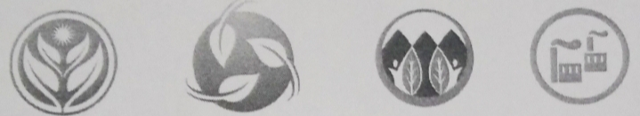
A. 1 B. 2 C. 3
2. 右图的竖式中，框中的数字表示15个（ ）。
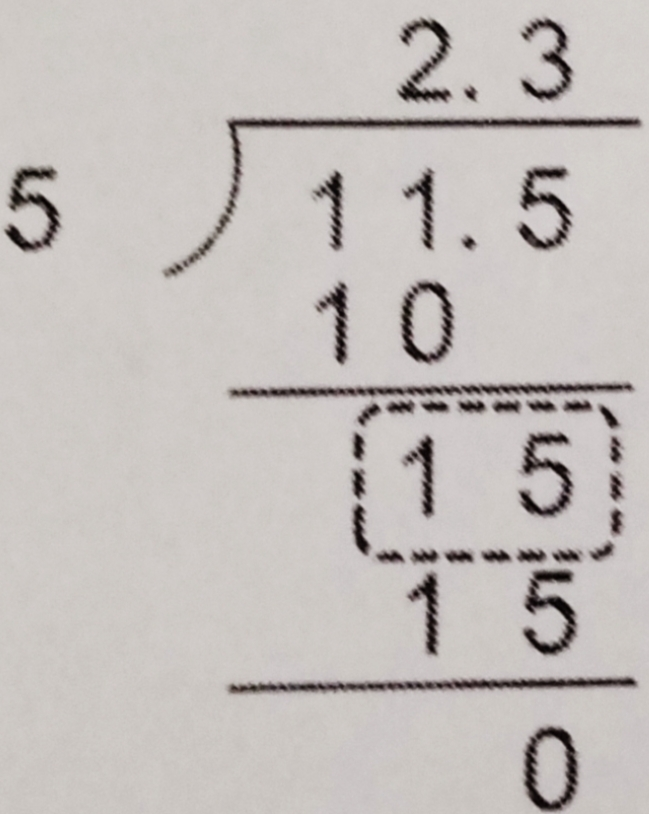
A. 1 B. 0.1 C. 0.01
3. 三江源自然保护区是中国面积最大的自然保护区，位于青藏高原东北部，横跨青海、四川、西藏三省区，总面积达到36.5万（ ）。
A. 平方米 B. 公顷 C. 平方千米
4. 如右图，如果把一个长5厘米，高4厘米的长方形拉成一个平行四边形，这个平行四边形的面积可能是（ ）厘米。
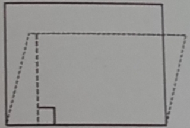
A. 3 B. 4 C. 5
5. 五（1）班和五（2）班各派了3名同学参加植树护林活动。五（1）班派出的人数占全班的 \( \frac{1}{14} \)，五（2）班派出的人数占全班的 \( \frac{1}{16} \)。两个班的人数比较（ ）。
A. 两个班的人数同样多 B. 五（1）班人数多 C. 五（2）班人数多
6. \( \frac{\left( \right)}{\left( \right)} = 7 \div 8 = \frac{56}{\left( \right)} = 35 \div \left( \right) = \left( \right) \) （填小数）
7. \( \frac{2}{5} \) 的分数单位是（ ），再加上（ ）个分数单位就是最小的质数。
8. \( 0.72m^2 = \left( \right)dm^2 \)
9. 如右图，算式 \( 3 \div 1.1 \) 的商大概在（ ）位置。
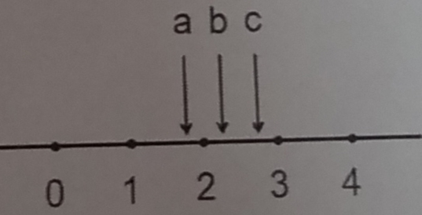
10. 把 \( \frac{3}{7} \) 的分子加上18，要使分数的大小不变，分母应加上（ ）。
11. 李叔叔上班选择低碳出行，他可以乘坐1路、99路和100路公共汽车。1路每12分钟发一次，99路每6分钟发一次，100路每8分钟发一次。李叔叔乘坐（ ）路的可能性较大。9点时三条线路同时发车，下一次路口共有汽车同时发车的时间是9时（ ）。
12. 2024年第4季度，某市的生态环境保护宣传组进社区进行宣传。其中，开展节约用水宣传6次，植树护林宣传4次，海洋保护宣传3次，垃圾分类宣传3次。该组开展植树护林的宣传次数占第4季度生态环保宣传总数的（ ）最简分数。
13. 数一数，右图的中国环境标志的面积大约是（ ）平方厘米。（每个小方格的边长表示1cm）
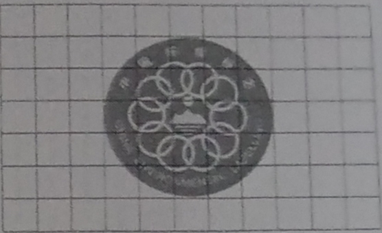
14. 在低碳生活示范社区，有一个平行四边形宣传牌，其面积是36平方米，底边长度为0.9米。现在要沿着平行四边形的高给宣传牌涂漆，请问这个宣传牌的高度是（ ）米。
15. “长桌宴”是餐桌为隆重的待客礼俗。接待客人时，各桌摆上长条桌，将米酒及各种用菜烹煮的食物烹饪的美食摆在一起，共同款待客人。以下为长桌和座位的排摆方式：
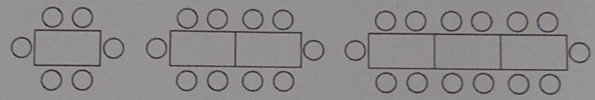
照这样摆下去，4张桌子拼在一起可以坐（ ）人，n张桌子可以坐（ ）人。
16. 写出下列算式的得数。（本题共9小题，每小题1分，共9分）
17. 用竖式计算。（本题共4小题，每小题3分，共12分）
① \( 3.24 \div 2.4 = \)
② \( 31.8 \div 30 = \)
③ \( 25.6 \div 0.6 = \) （结果用循环小数表示）
④ \( 81 \div 13 \approx \) （结果保留两位小数）
18. 用你喜欢的方法计算。（本题共3小题，每小题3分，共9分）
① \( (5.2 + 0.12) \div 0.4 \)
② \( 0.7 \times 99 + 0.7 \)
③ \( 60 \div 0.25 - 0.25 \)
19. 根据下列提示作图：
（1）一个图形的是口，请在方格图中补充完整这个图形。
（2）请在方格图中画出这个图形向下平移2格，再向右平移2格后的图形。
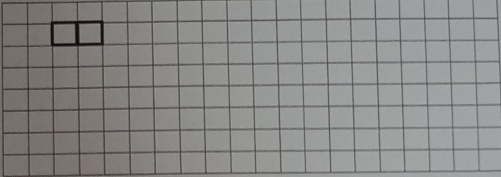
20. 以虚线为对称轴，画出方格纸中图形的另一半。按边分，这整个图形是一个（ ）三角形，再画出一个与它面积相等的梯形。（6分）
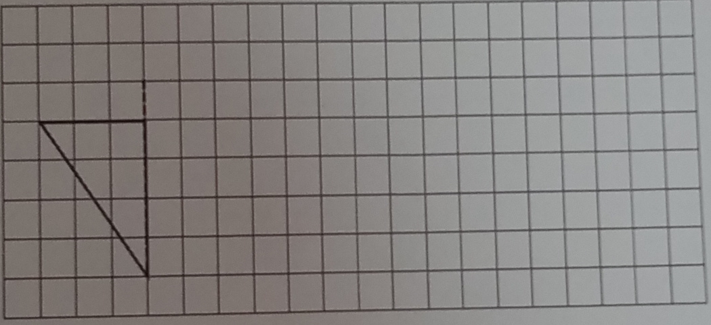
绿水青山就是金山银山。我们通过积极开展植树造林、倡导低碳生活方式、加强污染治理、执行天然林保护项目、推行退耕还林还草等措施，致力于生态保护，让天更蓝、山更绿、水更清。
21. 风力发电不会产生污染或二氧化碳等温室气体排放，受到全球各国的重视。全球首台16兆瓦海上风电机组日最高发电量是我国第一座风电场“马兰风电场”日最高发电量的多少倍？
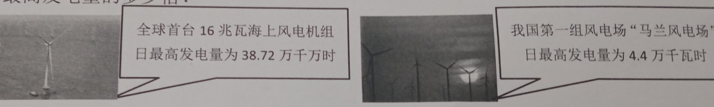
全球首台16兆瓦海上风电机组 日最高发电量为38.72万千瓦时
我国第一座风电场“马兰风电场” 日最高发电量为4.4万千瓦时
22. 通过加强大气污染防治，我国的空气质量逐步改善。某市11月城市空气质量优良天数为24天，轻度污染天数为4天，其余为重度污染。这个月重度污染有多少天？重度污染天数占这个月总天数的几分之几？
23. 河道旁种植草坪有生态修复、防洪护岸、景观美化等优势。某河道旁新种植了五块同样大的平行四边形草坪（如图），每块草坪的面积是多少平方米？（草坪间隔忽略不计）
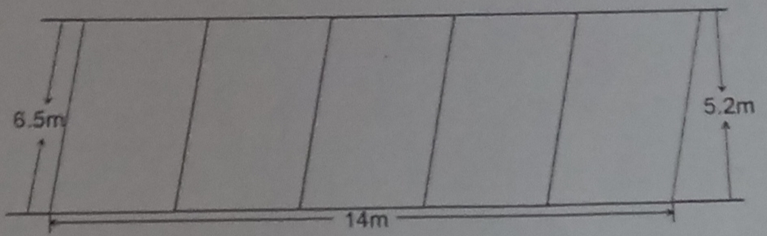
24. 为节能减排，某小区设置了一些旧衣物回收箱。
(1) 工作人员要为回收箱喷涂环保漆。一个环保箱正面的喷涂面积是多大？（投放口也要喷漆）
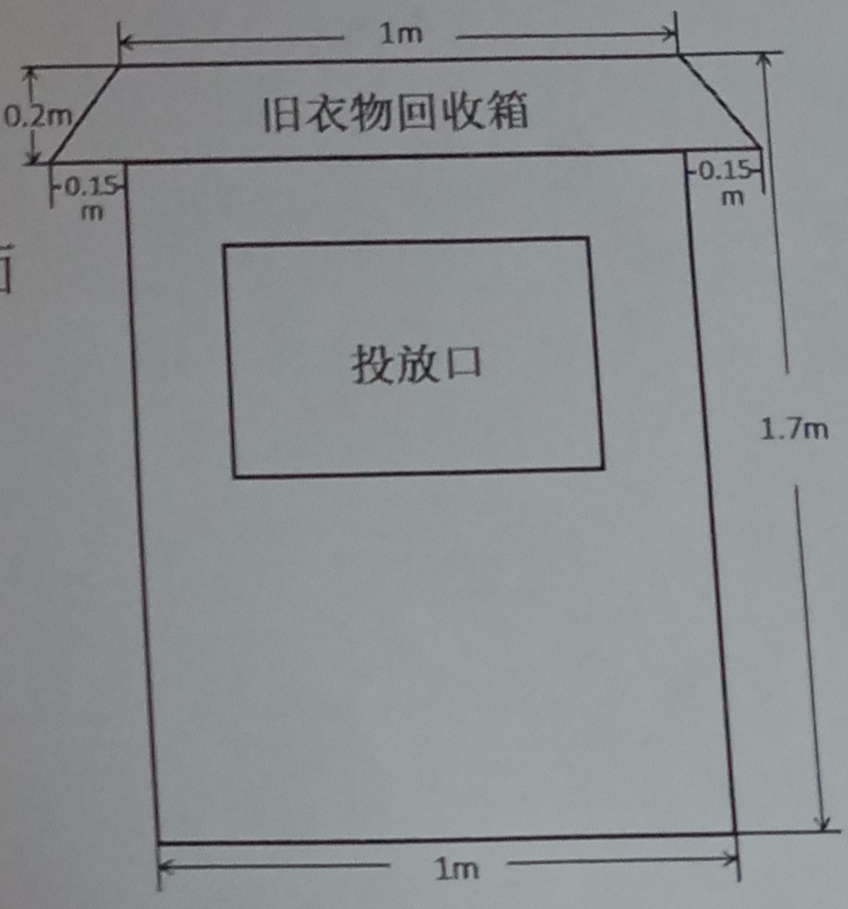
(2) 经统计，投放1kg旧衣物循环使用能减少碳排放3.6kg。某单元共有25户居民，11月投放旧衣物循环使用累计减少了36kg的碳排放，求这个月平均每户居民大约投放旧衣物多少千克？
25. 某市为鼓励绿色出行，减少污染排放，对新能源汽车停车实施优惠政策。李阿姨停新能源汽车付费20.5元，她停车的时间大约有多长？
| 停放时间 | 收费金额 |
|---|---|
| 1小时（含1小时） | 4元/时 |
| 2小时（含2小时） | 8元/时 |
| 2小时以上 | 11元/时 |
（不足1小时按1小时计算）